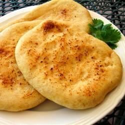

Home
Indian Naan Recipe

Description and Directions
Indian Naan.
This is an authentic Indian Naan recipe. I have made this many times.
It goes well with Indian curry which has a lot of gravy,
such as the Butter Chicken.
Step 1
Whisk the warm water with the yeast and sugar until the yeast is dissolved.
Cover and let stand in a warm place for 10 minutes.
Step 2
Sift flour and salt three times into a large bowl add the yeast mixture,
half of the ghee and all the yogurt. Mix into a soft dough then knead on a
floured surface for about 5 minutes or until dough is smooth and elastic.
Place the dough in a large greased bowl, cover and let stand in a warm place
for 1 1/2 hours or until the dough is doubled in size .
Step 3
Punch down dough then knead for 5 minutes. Divide dough into 6 pieces. Roll
each piece out into 8 inch round naans.
Step 4
CCover an oven tray with foil and grease the foil. Brush the naan with a
little of the remaining ghee and sprinkle with some of the kalonji. Cook naan
one at a time under the broiler for about 2 minutes on each side or until
puffed and just browned.
Ingredients
- ⅔ cup warm water (110 degrees F/45 degrees C)
- 1 teaspoon active dry yeast
- 1 teaspoon white sugar
- 2 cups all-purpose flour
- 1 teaspoon salt
- ¼ cup ghee
- 2 tablespoons plain yogurt
- 2 teaspoons kalonji (onion seed)
Nutrition Facts
Per Serving: 237 calories; protein 4.9g; carbohydrates 33.3g;
fat 9.3g; cholesterol 22.5mg; sodium 393.2mg.
Back to Recipe List Homepage